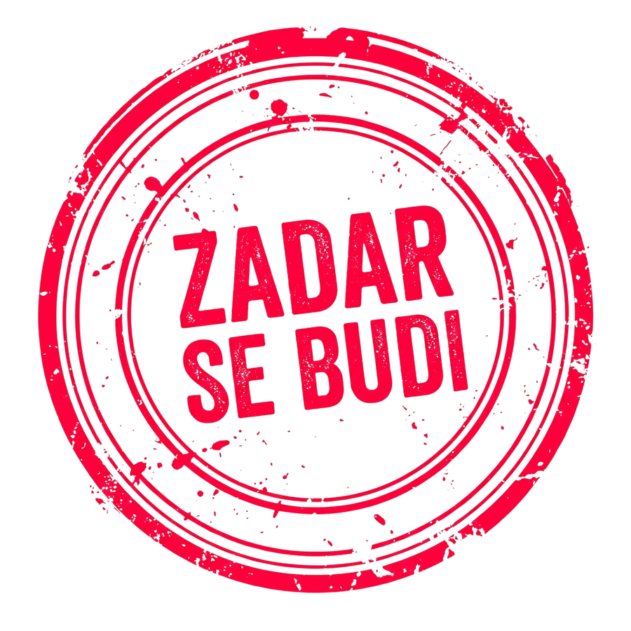

Zadar je aktivni front pokreta. Imamo podršku iz Zadra i okolice, a ljudi su spremni za mobilizaciju stanovništva u sklopu projekta. Dvije objave o problemima s kojima se Zadar bori i koje možemo riješiti svojim planom: stanovi koje mladi ne mogu platiti i liste čekanja u bolnici. Podaci su provjereni, a izvori navedeni na dnu. Stanje činjenica: 30.10.2026.

// Glas iz Zadra
Podršku imamo iz Zadra i okolice, a ljudi su spremni za mobilizaciju stanovništva u sklopu projekta.
Ništa ne radimo protiv zakona. Za sada radimo u tajnosti, kako je dogovoreno. Sretni smo što smo mogli upoznati jednog predstavnika iz Zagreba koji je došao čak do Zadra da bi nama nekolicini objasnio o čemu se radi.
Uz vas smo. Mi smo narod, mi smo ova država. Idemo do kraja.
// Objava 01 // 30.10.2026.
Stanovi u Zadru: mladi ih ne mogu platiti
Zadar je grad u kojem ljudi rade, a dom im je sve dalje. Dok se cijene stanova i najma penju, vlast nudi programe koji pomažu pojedincima, ali ne diraju uzrok. Mi ćemo uzrok rješavati zajedno, kad preuzmemo vlast.
Cijene novogradnje. Prema tportalu (5.5.2026.), najjeftinije kvadrate zadarske novogradnje teško je naći ispod 3.000 eura, a luksuznija novogradnja kreće se između 8.000 i 10.000 eura po četvornom metru.
Najam. Mladi Zadranin u istom je prilogu rekao da se za bolji stan, koji nije samo jedna soba, traži 700 do 800 eura, a za dvoje ljudi i do 1.000 eura. To je izjava jednog sugovornika, a ne službena statistika.
POS stanovi. U Zadru je izgrađeno oko 500 POS stanova, a gradonačelnik Šime Erlić navodi listu od preko 1.200 zainteresiranih. Ministar graditeljstva Branko Bačić priznao je da kvaliteta POS stanova nije ujednačena i pozvao kupce da prijave loše izvedene radove.
Što vlast nudi. Država je općini Ražanac prepustila zemljište za obiteljske kuće po cijeni umanjenoj za 80 posto, a Zadarska županija nudi subvenciju rate kredita do 300 eura mjesečno. To priznajemo, ali to su programi za rijetke koji uđu u natječaj, a ne rješenje za sve.
Subvencija rate ne pravi nove stanove i ne vraća prazne stanove na tržište. Zato mladi ostaju između cijene koju ne mogu platiti i liste na koju čekaju.
Što ćemo napraviti kad preuzmemo vlast
Progresivni porez na mrtvi kapital: porez raste sa svakom sljedećom praznom nekretninom, a izuzimaju se prvi dom, jedina nekretnina i vikendica pod jasnim uvjetima. Prazna se nekretnina utvrđuje preko potrošnje vode i struje i evidencije prebivališta. Prihod ide u komunalnu infrastrukturu mjesta u kojem nekretnina stoji. Točka 03-3 našeg Nacionalnog programa. Kako provodimo →
Prva nekretnina bez poreza na promet: obitelj koja kupuje prvu nekretninu i u njoj živi ne plaća porez na promet ni dodatne pristojbe i limite. Točka 03-4. Kako provodimo →
Fiksna kamata na stambene kredite za prvu nekretninu i popis dopuštenih naknada, uz pravo prelaska na fiksnu kamatu bez troškova za postojeće kredite. Točka 07-1 (stup 7). Kako provodimo →
Što ti možeš: javi nam kakav je stvarno najam u tvom kvartu i koliko čekaš na stan. Prijavi se i u poruci stožeru napiši što znaš. Nadimak je dovoljan.
Pacijent u Zadru i okolici ne smije mjesecima čekati pretragu dok skupi aparati stoje neiskorišteni popodne i vikendom. Zdravlje nije luksuz, a o tome koliko se čeka ne smije ovisiti u kojem si gradu rođen.
Što pokazuje službena lista. Na javnoj listi čekanja Ministarstva zdravstva i HZZO-a (CEZIH), stanje 30.10.2026. u 16:03, prvi slobodni termin za MR mozga u Općoj bolnici Zadar je 2.6.2027., što je 215 dana čekanja.
Usporedba. Na istoj listi, za istu pretragu, u OB Dubrovnik čeka se 21 dan, a u KBC Rijeka 21 dan. U Zadru se, dakle, čeka otprilike deset puta duže.
Zašto je to važno. MR mozga nije pretraga koja može čekati sedam mjeseci. Tko si to može priuštiti, ide privatniku, a tko ne može, čeka.
Napomena. Lista se ažurira svaka dva sata i brojke se mijenjaju. Provjeri sam na poveznici dolje, a za druge pretrage isti alat prikazuje stanje za svaku bolnicu.
Dugo čekanje nije prirodna pojava nego rezultat ugovora, limita i rasporeda rada koje netko određuje. A što je određeno, može se i promijeniti.
Što ćemo napraviti kad preuzmemo vlast
MR i CT uređaji rade u 2 do 3 smjene i vikendom dok god postoje liste čekanja, uz primjereno plaćen rad popodne i vikendom. Kvar se prijavljuje isti dan, a država ga popravlja o svom trošku. Točka 05-1 našeg Nacionalnog programa (stup 5). Kako provodimo →
Ukidanje mjesečnih limita HZZO-a: HZZO plaća stvarno obavljen broj pregleda i operacija po javnom cjeniku, uz nadzor kvalitete. Točka 05-4. Kako provodimo →
Ravnatelji bolnica po natječaju, a ne po stranačkom ključu, s ugovorom o učinku koji mjeri liste čekanja i dugove. Neispunjen cilj znači razrješenje. Točka 05-2. Kako provodimo →
Što ti možeš: javi nam na koju si pretragu čekao i koliko dugo, u Zadru, Biogradu, Pagu, Benkovcu ili na otocima. Prijavi se i u poruci stožeru napiši što znaš. Nadimak je dovoljan.
Napomena o podacima: cijene i najam u objavi 01 preuzete su iz novinskog izvješća i navoda sugovornika, a ne iz službene statistike. Brojevi dana čekanja u objavi 02 s javne su liste koja se ažurira svaka dva sata, pa se mijenjaju. Omjer čekanja (otprilike deset puta duže) naš je izračun: 215 podijeljeno s 21.